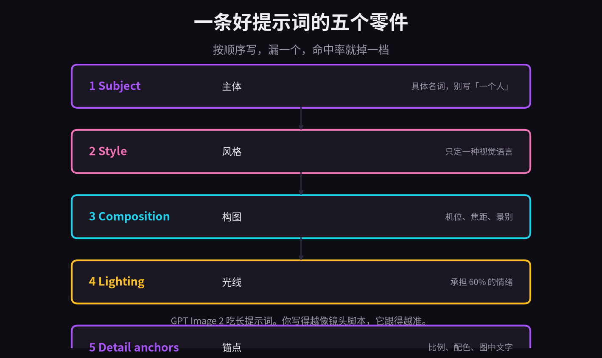
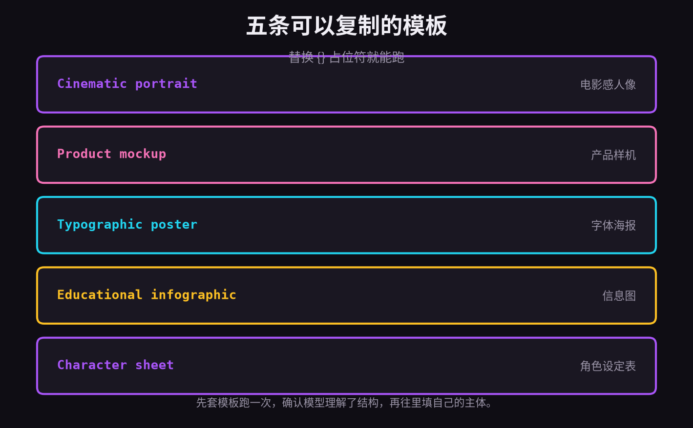
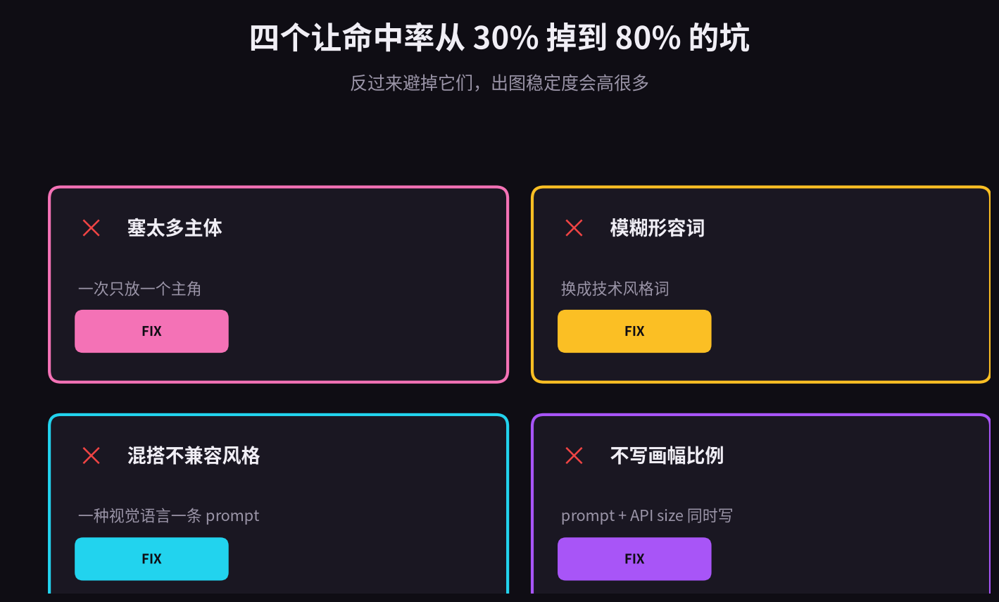
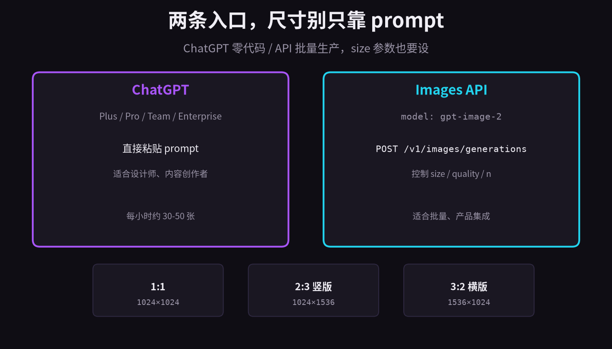

OpenAI 2026 年的图像生成旗舰模型已经换成了 gpt-image-2。它不是 DALL·E 3 的小迭代，而是专门攻两个老大难问题：长提示词的跟随度，和图中文字的可读性。
如果你用过 Midjourney 做海报，一定被「文字乱码」折磨过；如果你用 DALL·E 3 写过五从句 prompt，也一定见过它漏掉其中两句。GPT Image 2 就是奔着这两件事来的。
这篇按 AIPromptary 的指南整理。把 prompt 拆成五个零件，给你五条可复制模板，再列四个常见错误。看完可以直接用。
01
一条好提示词的五个零件
GPT Image 2 吃长提示词，但「长」不等于「乱」。AIPromptary 的编辑把它拆成五个固定零件，每次写 prompt 就当 checklist 用。

按这个顺序写，漏一个，命中率就掉一档。
Subject 主体，用具体名词。不要说「一个人」，要说「一位 30 岁、穿黑色围裙的男咖啡师」。具体性把模型的可能性空间压小，结果更接近你想要的。
Style 风格，只选一种视觉语言。电影感、3D 渲染、矢量扁平、水彩、铅笔素描，都是明确的 register。一条 prompt 里混两种风格，通常只会得到一团糊糊。
Composition 构图，写机位、焦距、景别。「85mm 镜头、浅景深、特写人像」比「很酷的角度」可靠一百倍。
Lighting 光线，承担 60% 的情绪。用技术词：「黄金时段侧光」「柔光箱主光、右侧轮廓光」「阴天漫射日光」。GPT Image 2 都听得懂。
Detail anchors 锚点，把不能模糊的东西钉死：画幅比例、配色、图中文字内容。比如「3:2 画幅、青橙配色、 headline 为 Late Autumn 2026」。
把五个零件串起来，大概长这样：
A cinematic portrait of a 30-year-old male barista in a black apron, standing behind a coffee machine, shot on Arri Alexa Mini with a 50mm anamorphic lens, shallow depth of field, golden-hour side light through window, muted teal and amber color grade, photorealistic, 35mm film grain, aspect ratio 16:9.
02
五条可以复制的模板
如果你不知道怎么开头，先套模板跑一次。模板的价值不是让你照抄，而是让模型先理解你想要的结构。

替换 {} 里的占位符，直接粘贴。
最实用的是这三条：
电影感人像
Cinematic still of {SUBJECT}, shot on Arri Alexa Mini with a 50mm anamorphic lens, shallow depth of field, golden-hour side light, dust particles in the air, muted teal and amber color grade, photorealistic, high detail, 35mm film grain, aspect ratio 16:9.
产品样机
Studio product photography of {PRODUCT}, soft three-point lighting with a large softbox key, seamless paper backdrop in {COLOR}, slight reflection on a polished surface, hyper-detailed, photorealistic, 50mm lens, 4k. Aspect ratio 1:1, brand-clean composition.
字体海报
Bold modernist movie poster for a film called "{TITLE}", featuring {SUBJECT} in dramatic silhouette. Rendered in flat vector style with a single accent color {COLOR}. The headline "{TITLE}" is centered at the top in a heavy sans-serif typeface. Tagline "{TAGLINE}" sits at the bottom in smaller weight. Aspect ratio 2:3.
模板里 {} 越少越好。先把结构定下来，再逐步替换主体和配色。
03
四个常见错误
AIPromptary 说避掉这四个坑，命中率能从 30% 跳到 80%。我没有精确验证过这个数字，但每条都确实是自己踩过的。

左边是坑，右边是修。
塞太多主体。「一只猫、一只狗、一只鹦鹉在面包店里穿燕尾服看夕阳」——模型会随机挑其中两个，剩下的当它不存在。 fix：每条 prompt 只放一个主角，其他元素留到第二次生成。
用模糊形容词。「美丽」「高质量」「惊艳」都是噪声，模型不知道它们长什么样。换成技术词：photorealistic、oil painting、isometric 3D。
混搭不兼容风格。「写实动漫」或「扁平 3D」会让模型 confusion。想要 hybrid，不如出两张图，后期合成。
不写画幅比例。GPT Image 2 默认出正方形。你要 16:9 或 4:5，必须在 prompt 里写，同时把 API 的 size 参数也设对。只靠 prompt 说 ratio，图可能还是方的。
04
两条入口，尺寸别只靠 prompt
怎么用？两条路。

ChatGPT 零代码，API 批量生产。
ChatGPT：Plus / Pro / Team / Enterprise 用户默认就有。直接粘贴 prompt，说一句「光线再暖一点」就能迭代。适合设计师和内容创作者。
Images API：POST 到 /v1/images/generations，model 设为 gpt-image-2。你能控制 size、quality、n。适合批量和产品集成。
curl https://api.openai.com/v1/images/generations \ -H "Authorization: Bearer $OPENAI_API_KEY" \ -H "Content-Type: application/json" \ -d '{ "model": "gpt-image-2", "prompt": "A cinematic portrait of a cyberpunk samurai...", "size": "1024x1024", "quality": "high" }'
尺寸方面，API 目前给的是 1:1（1024×1024）、2:3 竖版（1024×1536）、3:2 横版（1536×1024）。标准质量最便宜，高画质和宽图更贵。ChatGPT Plus 用户大约每 3 小时能生成 30-50 张。
商业使用上，OpenAI 目前允许你对生成内容拥有完整权利，包括商用。但上线客户项目前，最好再核对一次最新条款。
05
总结
写好 GPT Image 2 的 prompt，本质上是在写一份镜头脚本。不是越短越好，而是越具体越好。
记住这几点：
1. 主体用具体名词，越具体，模型空间越小。
2. 风格只定一种 register，别混。
3. 构图、光线用技术词，少用「酷」「好看」。
4. 结尾必须钉死画幅、配色和图中文字。
5. API 调用时 size 参数要和 prompt 里的 ratio 一致。
6. 先套模板，再微调，比从零写长 prompt 稳定得多。
提示词不是许愿，是一份视觉指令。你写得越像分镜，模型出图越稳。
原文参考：aipromptary.com/guides/gpt-image-2-prompts-guide。